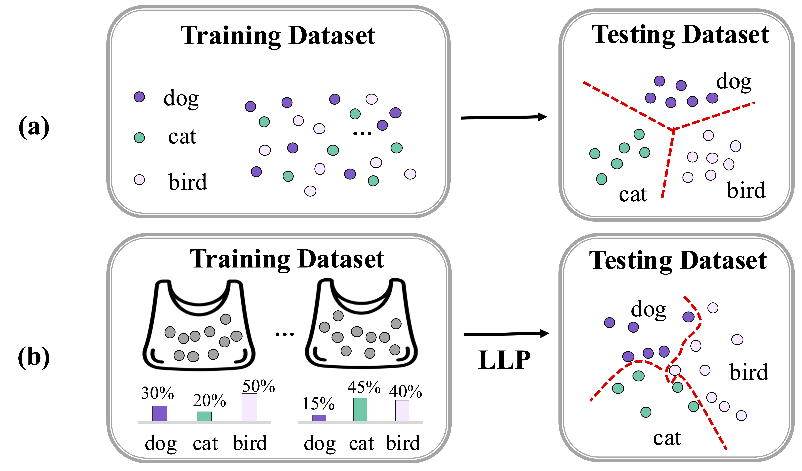

👩🏻💻 About Me
I am currently a Ph.D. student at the Pattern Recognition and Intelligent System Laboratory (PRIS-CV), School of Artificial Intelligence, Beijing University of Posts and Telecommunications (BUPT). Before that, I obtained my bachelor degree from Beijing University of Technology (BJUT).
My research interest includes:
-
computer vision 🏞
-
computational photography 📸
-
3D reconstruction 🗽
📝 Publications
ICASSP 2026

Jinyi Chang, Dongliang Chang, Lei Chen, Bingyao Yu, Zhanyu Ma.
- A novel approach for privacy-preserving Fine-Grained Visual Classification(FGVC), eliminating direct reliance on instance-level labels based on Learning from Label Proportions(LLP) paradigm.